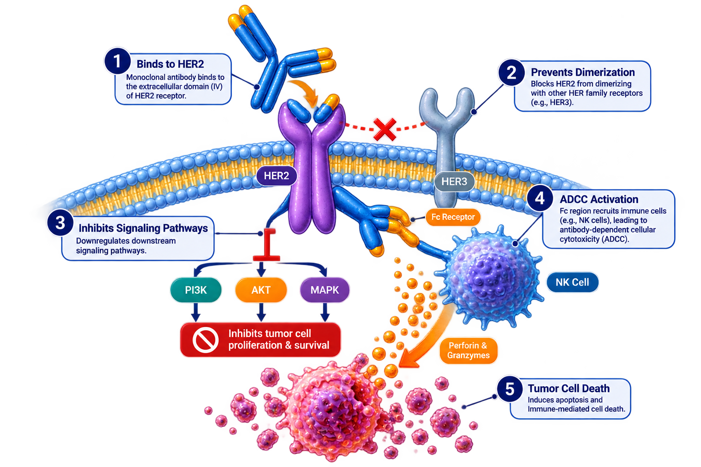

Roche
Herceptin is a humanized monoclonal antibody that targets HER2 receptors and inhibits HER2-mediated signaling, reducing tumor growth and improving survival outcomes in HER2-positive cancers.
Herceptin
Trastuzumab
Monoclonal Antibody
IV Infusion
Roche
Trastuzumab binds to the extracellular domain of HER2 receptors, blocking downstream signaling pathways and promoting antibody-dependent cellular cytotoxicity (ADCC), resulting in tumor cell death.

| Trial | Setting | Outcome |
|---|---|---|
| HERA | Early Breast Cancer | Improved DFS |
| NSABP B-31 | Adjuvant | Improved OS |
| N9831 | Adjuvant | Reduced Recurrence |
Loading Dose: 8 mg/kg IV
Maintenance Dose: 6 mg/kg IV every 3 weeks